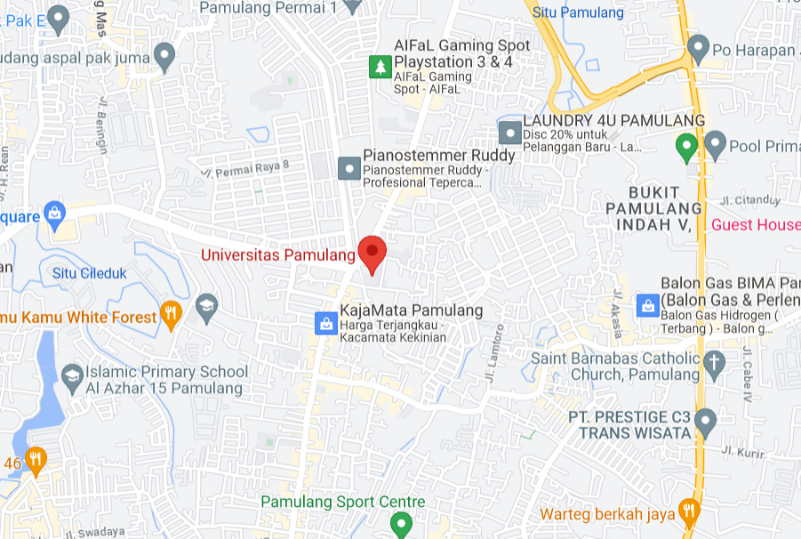

|
WEB DESIGN |
|
|  |
Web Design adalah salah satu istilah tentang desain secara visual yang diterapkan kepada media digital yaitu website. Dimana hal ini juga berkaitan dengan apa itu web development, Karena pengembangan sebuah website tidak hanya menuntut fungsionalitas website tersebut, melainkan kita juga membutuhkan sebuah esensi seni yang disebut design. |
|
|
Butuh Bantuan ? Silahkan Hubungi Call Center |
| Tujuan dibuatnya sebuah website tidak lain dan tidak bukan adalah sebagai salah satu media komunikasi, dimana memang bertujuan untuk membuat atau menyampaikan informasi secara cepat dan realtime. |
 |
 |
| Membuat desain pada sebuah website memerlukan kemampuan khusus dimana tidak semua orang bisa memberikan desain unik tanpa menghilangkan fungsi utama dari website tersebut. |
Kesimpulan kali ini tentang pengertian web design adalah istilah dalam pembuatan desain yang berfokus pada tampilan website tanpa menghilangkan fungsi utama dari website tersebut dan memberikan kenyamanan tambahan pada pembaca atau pengunjung website. |